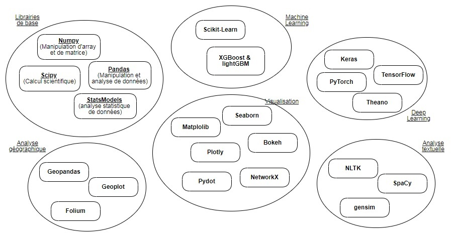

Chapitre 4 : Les packages en python
Qu’est ce qu’un package ?
Commençons simplement ! Déjà, un module est simplement un fichier contenant un ensemble de fonctions python et de variables globales. L’intérêt d’un tel fichier ? En pratique, si des fonctions sont créées dans un notebook (ou quelconques éditeurs), celles-ci sont perdues dès la fermeture de celui-ci. Cette encapsulation dans un fichier facilite la programation et notamment le travail collaboratif.
Pour charger les fonctions du fichier premierModule.py, il suffit d’exécuter au sein d’un notebook (ou dans un éditeur intégré à un IDE tel que Spyder) la commande suivante :
import premierModule
Toutefois, le recours à la fonction premiereFonction de ce module nécessite de référencer le nom du module selon cette commande : premierModule.premiereFonction. Pour charger directement les fonctions, la commande suivante peut être exécutée :
from premierModule import *
Un package désigne alors la réunion, au sein d’un même répertoire, de modules chargeables directement avec une seule instruction. Au sein du dossier relatif à un package, un fichier d’initialement, obligatoirement nommée init.py, doit être créé.
Installation avec le gestionnaire de packages PIP ou le gestionnaire de packages Conda
-
Pip, qui signifie Pip Installs Packages, est le gestionnaire de paquets officiellement approuvé par Python. Il est généralement utilisé pour installer des paquets publiés sur PyPI (Python Package Index -repository of software for the Python programming language).
-
Conda est un gestionnaire d’environnement multi-plateformes indépendant du langage
N’hésitez pas à lire cet article si vous souhaitez quelques éléments supplémentaires sur conda !
Comment télécharger un package ?
Pour télécharger un package, tapez dans un jupyter notebook :
!pip install nomDuPackage
Pour importer le package pandas (l’ajout d’alias est optionnel) :
import pandas as pd
Pour importer un module spécifique (par exemple, pyplot) d’un package (ici matplotlib)
from matplotlib import pyplot
Vue d’ensemble des principaux packages python

Petit retour sur la notion d’objets !
Prenons le package pandas et chargeons les données en reprenant le code suggéré dans le chapitre sur la lecture, l’écriture et la fermeture des fichiers
import pandas as pd
data=pd.read_csv("commune2019.csv")
Si on souhaite connaître la dimension de la base de données, on peut consulter l’attribut shape de l’instance data issue de la classe des dataframes de pandas. Il suffit d’exécuter le code suivant :
data.shape
Par ailleurs, si on souhaite observer les deux premières observations de la base, on peut utiliser la méthode head avec le code :
data.head(2)